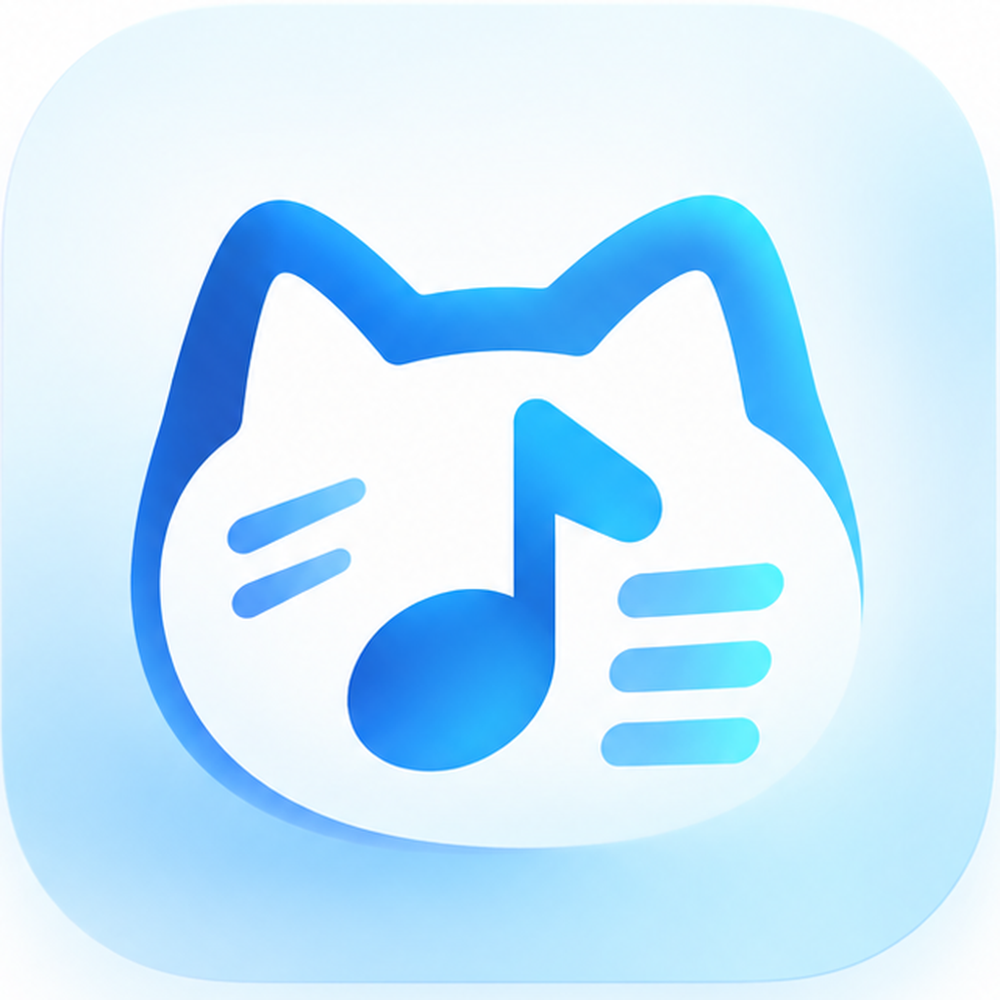

从第一份歌单开始
安排曲目
首次打开可查看内置示例。在歌单库新建或复制歌单，填写歌名、BPM、拍号与备注，再按演出顺序排列。
打开 Click
切换到 Click 页面，选择曲目并开始播放。支持 Tap 定速、临时速度、恢复原速与四种音色。
导出节目单
在歌单页导出图片，保存到相册或通过系统分享面板发送。兼容的 JSON 文件可通过歌单库导入。
常见问题
6/8 拍的速度怎样理解？
BPM 按拍号分母对应的音符计数。6/8 在 120 BPM 时每 0.5 秒一响，每小节六响；不是每小节两响的附点四分音符计法。
临时速度为什么不会改写歌单？
临时速度用于排练，不会自动改写歌单。要保存新速度，请在歌单表格中编辑 BPM；“恢复原速”可回到歌单速度。
需要联网、登录或激活码吗？
iOS 版的歌单和节拍器功能离线运行，无需账号或外部激活码。App Store 下载及系统分享服务可能需要网络。
保存图片失败怎么办？
请在系统设置中检查 Click歌单的照片添加权限，也可以使用系统分享面板。拒绝照片权限不影响歌单编辑和节拍器。
导入文件有什么要求？
使用兼容的 UTF-8 JSON 歌单文件，大小不超过 2 MB。先查看导入预览再确认；导入以副本追加，不覆盖原有歌单。
更换设备或删除应用前应注意什么？
数据保存在设备本地，应用没有自建云同步服务。请保留重要歌单的图片及可用源文件；删除应用可能删除本地数据。系统备份是否包含数据取决于您的 iOS 设置。
没有声音，或者拔下耳机后停止了？
请检查媒体音量、应用音量和当前音频输出。音频被中断或原有输出设备移除时，Click 会停止；检查输出后手动重新开始。
需要帮助？
请说明设备型号、iOS 版本、应用版本及重现步骤。截图请先遮盖个人信息，请勿发送密码或其他敏感资料。
邮件联系 Eros YeErosIris11050518@gmail.com
ClickSetlist is an offline setlist manager and metronome for iPhone and iPad. For help, email us with your device, iOS version, app version, and steps to reproduce the issue. It does not include song recordings or backing tracks.